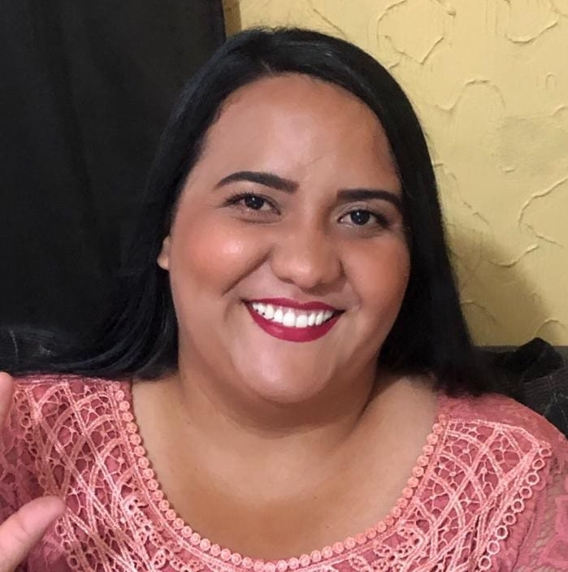

Maria Vanusa Rosendo Rodrigues
Desenvolvedora Frontend Júnior


Um pouco sobre mim!
Oi! meu nome é Maria Vanusa Rosendo Rodrigues, seja bem-vindo(a)!
Sou formada em Pedagogia e Análise e Desenvolvimento de Sistemas, gosto muito da area da programação. Por esse motivo, estou buscando novos conhecimentos para mudar de area e tornar meu sonho realidade, que é ser uma programadora. Atualmente comecei a colocar esse sonho em prática estudando HTML, CSS, JavaScript e também JAVA. Gosto muito de café (costumo dizer que café é vida! rs), e meus principais hobbies são curtir a minha família, codar um pouco e as vezes ver séries.